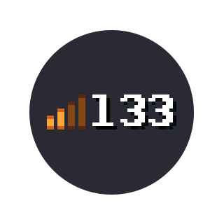

Chapter 6 Playing with lags

6.1 Practice
If you want to learn how to play with lag, and you mostly play with good ping, it's basically like relearning KAG. Most of being able to play with lag is just practice and training -- there's not much to be said in this chapter, however there are some things we'd like to say. But remember -- want to dominate on 166 ping, play a lot on 166 ping. Focus on getting used to your positioning. Timing and whatnot is important of course, but getting used to where you really are is fundamental.
6.2 How to play
With lag, you do things earlier than they actually happen. This includes stuff like slashing, shielding and moving. Most of your playstyle on lags should consist of just slashes, preferably single slashes. They're the easiest to learn on ping (their different range and timing) if you just use them a lot, and if you keep baiting enemies then you can even kill some rather good US players without dying much. Of course, you should still jab after slashes.
We actually don't know if most moves are possible with lags, but they are for sure MUCH, MUCH harder to do. For example, shieldbashing feels odd with lag, at least when you're on top of the enemy, so it is also a thing you should be careful with doing.
Instajabs are still possible with lag (tested on 166 ping), however you really need to train it a lot to be able to use it consistently -- avoid doing it in real matches until you train it. You could try setting up a server which you have 166 ping on and train the instajabs on there with the help of a friend.
6.3 Bomb jumping with lags
This one is at least much easier with ping. You don't need to be able to do double bomb jumps or triple bomb jumps. Just put 4 lit bombs on ground and you will gain lots more velocity than if you had 0 ping.